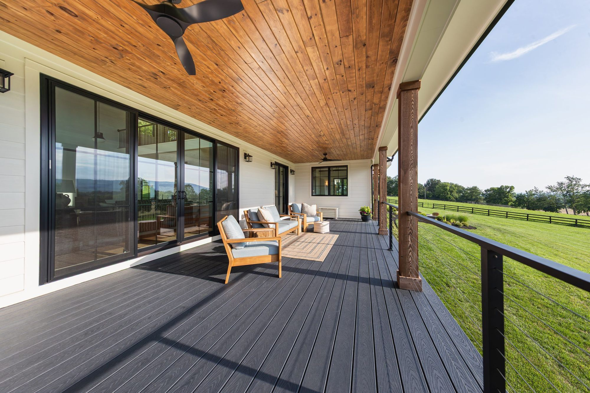
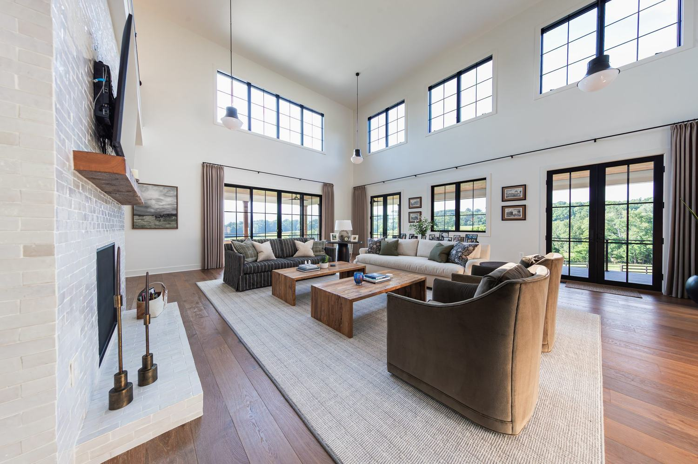
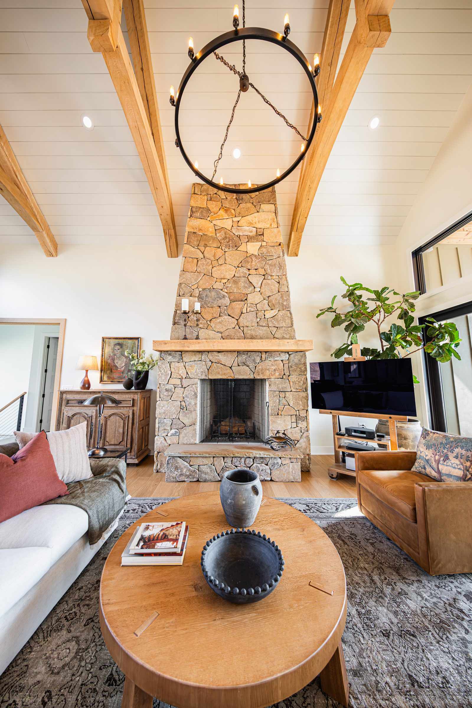

About Total Build
Since 1910, there has been a Smith on a job site.
Total Build is a custom home builder in Leesburg, Virginia. Brian Smith is the fourth generation of his family to build houses. The standard he holds is not one he invented; he inherited it from people who gave up a great deal to protect it.
The line
Four generations.
Brian's great-grandfather begins contracting, working on major concrete projects in Washington, D.C., including several national landmarks.
His grandfather takes it up, and builds custom homes in McLean under his own name: E.J. Smith Builders.
His father, Chris Smith, begins contracting in Loudoun County. He is still working today.
Brian begins training under his father.
Brian starts Total Build.
Where the standard came from
They closed a good company on purpose.
E.J. Smith Builders had a reputation in McLean for integrity and quality. When Brian's grandparents reached the end of their working life, they did not sell it, and they did not hand the name to someone else to carry.
They closed it. They were not willing to risk the family name outliving the standard behind it.
Brian was young, and it stayed with him. It is why this company is careful about what it puts its name on, and why the answer to can you do it cheaper is sometimes no.
Placeholder
A portrait of Brian goes here. The file in the media library is 504×504 with a circular mask baked into the alpha channel and cannot fill a sharp-cornered frame.
Brian Smith
The fourth Smith.
Some of Brian's earliest memories are of riding with his father to job sites: climbing the dirt piles from a newly excavated basement, the smell of fresh framing lumber and sawdust, watching a house take shape. He says walking onto one of his own sites still brings it back.
His father pushed him toward college so he would not have to work as hard physically. Brian earned a degree in Communications from George Mason, and construction pulled him back anyway. What he worked out was that his place was not in the field. It was guiding projects, clients and teams.
He started Total Build in 2008. He sets the standard the company builds to; the day-to-day of your build belongs to your project manager.
Why custom homes
Every family is different, so every house is.
Brian expected this work to get repetitive. You are handed a set of plans and you build what is on the page. He was wrong, and it did not take long to find out why.
A house is not really about square footage or finishes. It is about the way one particular family lives in it: where they gather, how they raise their children, which room they end up in at the end of the day. No two families answer that the same way, so no two houses we build come out the same.


Who you will actually work with
Builders, coaches, and advocates.
That is how Brian describes the job. A custom home is not built by one person. You will have a project manager who runs your site and answers your questions, working alongside superintendents, estimators, coordinators and the staff who keep a build moving.
Coaching matters as much as building. Most of our clients are doing this once. They arrive with an idea of the house and a hundred decisions they have never had to make, and our job is to see that every one is made with the real numbers in front of them. Advocating matters just as much: we are on your side of the table, including the parts of the job where it would be easier for us not to be.
Technical skill is essential. Character matters just as much. If someone does not care about serving people, they are not a fit here, however good their hands are.
One thing worth knowing, because it is where we differ. A lot of builders who advertise themselves as custom quietly discourage changes once construction starts, since changes disrupt a production schedule. We do not. Changes affect cost and schedule, and we will always tell you exactly how. But we would rather adapt than hand you the house that was easiest for us to build.
Let's build yours.
Tell us about the home you have in mind. We will be in touch personally, within a couple of days.
Start a conversation(703) 634-9211 · info@totalbuild.com · Leesburg, Virginia